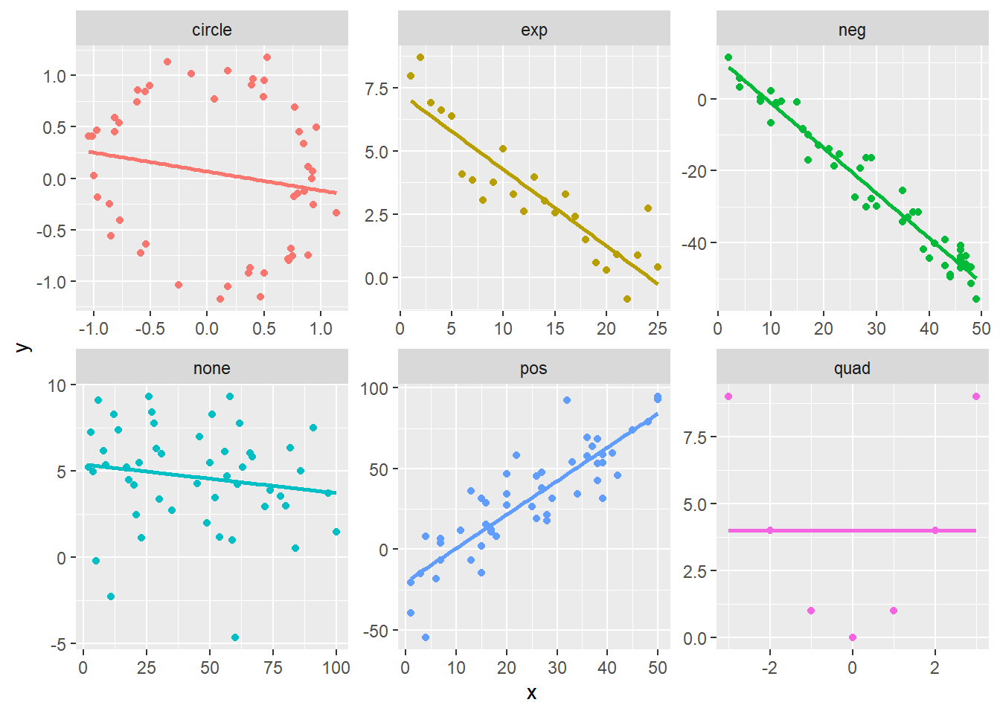

Chapter 8 Modeling relationships
One crucial goal of inferential statistics is the attempt to detect relationships between variables. This goal is missing a conspicuous piece, however. Namely, if we detect a relationship between two variables, what does that relationship actually look like? This is where modeling comes in. A model is a precise mathematical description that approximates the relationship between two (or more) variables. Among other things, a model should be able to generate predictions/forecasts at different values for the explanatory variable(s).
If we think in terms of inputs and outputs, or explanatory variables and response variables and think back to what we’ve covered so far, we have actually been modeling relationships; it’s just that these models have been quite simple. For instance, you can think of a two-sample t-test as a way to test for an association between a two-valued categorical explanatory variable and a numerical response variable. If we detect an association, what would the corresponding model be? The input/explanatory variable is just one of two values and response would simply be an estimate of that average value of the response variable for that specific input.
As an example, imagine we hypothesize a relationship between cola preference and statistical aptitude. To test this, we sample 35 Pepsi drinkers and 35 Coke drinkers, then give them all a statistics test. We go through a two-sample t-test and determine that, in fact, there is a relationship between cola preference and statistical aptitude. After making this determination, how would you estimate the statistical aptitude of a Coke drinker? It turns out your best, most reliable guess (at least as a point estimate) would be to use the average score of Coke drinkers. What we’re describing here is a model and we can think of it as a function
\[f \colon \{Pepsi, Coke\} = \begin{cases} \overline{x}_{Pepsi} & \text{if } Pepsi \\ \overline{x}_{Coke} & \text{if } Coke \end{cases}\]
You may be thinking “This seems to make things more complicated than it needs to be” and you are probably right to a certain degree. But the hope is that this perspective frames everything we’ve done in a way that makes the rest of what we’ll do make more sense.
In what comes we will finally start investigating relationships where one has a numerical explanatory variable and a numerical response variable. Our main tool for this investigation will be linear regression which is likely something you’ve seen before. Our hope is that the following chapter will soup up your understanding of linear regression and clarify some of the statistical ideas underpinning this tool. We will try to keep the formulas and math to a minimum, but a few will be necessary along the way.
8.1 Simple linear regression
8.1.1 The basics
Relationships between numerical variables can take on many different forms, so we will start with the most simple and most common type: linear relationships. Recall that a relationship between numerical variables \(X\) and \(Y\) is linear if \[ Y = mX + b \text{ or to make it more statistical } Y = \beta_0 + \beta_1 X + \epsilon. \]
The coefficients \(\beta_i\) are population parameters and \(\epsilon\) represents some random normally distributed noise with a mean of zero and a fixed standard deviation. This is meant to explain, to some extent, the data we witness when we are out in the wild; we almost never see the perfect linear relationships idealized by mathematics and there is almost always some noise that scatters data “around the true line.” The scatter plot below helps to visualize one possible relationship (this is using the res_demo_1 data set from the openintro package).
ggplot(res_demo_1, aes(x = x, y = y_lin)) +
geom_point() +
labs(title = 'A simulated linear relationship' )As usual, we almost never know the population parameters, so we need some way to estimate them. This is where linear regression comes in as it is a procedure that generates point estimates for the slope any vertical intercepts of a linear relationship between two variables. Very briefly and roughly, linear regression finds the coefficients of a line that is “simultaneously closest to all data points.” To make this more precise, we need to introduce some terminology.
Suppose you have a collection of sample data \(S = \{(x_1, y_1), \ldots,(x_n,y_n) \}\) and a line $ y= mx + b$ modeling the relationship between your \(x\) and \(y\) values. The \(i^{th}\) residual of this model is \[ e_i = y_i - (mx_i + b) \] giving the “leftovers” of the data from the model fit. If \(e_i > 0\) then your model under estimated \(y_i\) and if \(e_i < 0\) your model over estimated the data. Let’s make a guess for our simulation with the line \(y = -10 + 3.25x\). We’ll add our y estimates and a helper variable whose value depends only on the sign of the residual.
df <- res_demo_1 %>%
mutate(y_guess = -10 + 3.25*x
, residual = y_lin - y_guess
, residual_grp = if_else(y_lin - y_guess > 0, 'under', 'over'))Now let’s plot our estimated values, y_gess, the original data y_lin, and the residuals as vertical lines. The residuals have different colors depending on whether the original data lies above or below the line.
ggplot(df, aes(x = x, y = y_lin)) +
geom_point( color = 'black') +
geom_point(aes(x = x, y = y_guess), color = 'black', shape = 1 ) +
geom_segment(aes(xend = x, yend = y_guess, color = residual_grp) ) +
labs(title = 'An eyeballed line with residuals')Our line looks like a reasonable fit, but we also may have a suspicion that we could do better. We have to clear about what exactly we mean by better here. We don’t want to force the line to go through any specific points, but we want the residuals to be small. This means we should look for a line that minimizes the residuals. As we can see from the plot above, residuals can be both positive and negative, so we don’t want to try to minimize the sum of the residuals. Instead, we want to minimize the sum of squared error:
\[ SSE = \sum_{i=1}^n e_i^2 \]
We will skip the details, but linear regression produces the coefficients of the line of best fit, the line minimizing the SSE above. Looking at the plot above, you might suspect the line of best fit has a slightly smaller slope and a slightly larger vertical intercept. The plot below will compare our eyeballed guess line from above to the actual line of best fit.
ggplot(df, aes(x = x, y = y_lin))+
geom_point() +
geom_abline(slope = 3.25, intercept = -10, color = 'red') +
# the next line adds the true line of best fit
geom_smooth(method = 'lm', se = F) +
labs(title = 'Our guess compared to the real line of best fit')## `geom_smooth()` using formula = 'y ~ x'How can you actually find the line of best fit? R makes it quite easy! The syntax is almost identical to that which we used to run ANOVA tests in the last chapter, just with a different command. The basic syntax is
and this generates a model object and stores it as the value lin.model. Once you’ve done this, you can inspect the details with
Let’s run this on our simulated example and inspect the output.
##
## Call:
## lm(formula = y_lin ~ x, data = df)
##
## Residuals:
## Min 1Q Median 3Q Max
## -49.674 -11.216 1.234 10.311 41.593
##
## Coefficients:
## Estimate Std. Error t value Pr(>|t|)
## (Intercept) 2.43743 3.64257 0.669 0.505
## x 3.03273 0.06262 48.429 <2e-16 ***
## ---
## Signif. codes: 0 '***' 0.001 '**' 0.01 '*' 0.05 '.' 0.1 ' ' 1
##
## Residual standard error: 18.08 on 98 degrees of freedom
## Multiple R-squared: 0.9599, Adjusted R-squared: 0.9595
## F-statistic: 2345 on 1 and 98 DF, p-value: < 2.2e-16We will unpack most of the values throughout the rest of the chapter, but the first thing we want to notice is the Estimate column in the Coefficients table. Here you can read off the vertical intercept and the slope of the regression line. Thus, the line of best fit is
\[ \hat{y} = b_0 + b_1 x \approx 2.44 + 3.03x\]
Above we claimed that the line of best fit minimized the sum of squared error. Let’s see that this line of best fit has a smaller SSE than our eyeballed line from above.
## [1] 32022.14## [1] 36170.27As claimed, our eyeballed fit has a hire sum of squared error.
To close this quick introduction, let’s look at some real data. The data set satgpa from the openintro package provides information on 1000 randomly sampled students from an unnamed college. Let’s suppose we’re interested in the relationship between a student’s SAT verbal score and their math score, both given as percentiles. We postulate that there is an association between these variables. More specifically, we postulate that there is a positive association between these variables: on average, as a student’s SAT verbal score increases, so does their math score. The scatter plot below plots these variables against each other and includes a regression line.
ggplot(data = satgpa, aes(x = sat_v, y = sat_m) ) +
geom_point(alpha = .25) + #this makes the dots transparent so that repeats are clearer in the image
geom_smooth(method = 'lm', se = F) +
labs(title = "SAT Scores: Math vs Verbal") +
xlab('Verbal') +
ylab('Math')As we hypothesized, there does appear to be a moderately strong positive linear association between these variables, though the fit of our line doesn’t seem as good as the fit of the line of best fit in our simulated example. In the next section, we will learn about two ways to measure the strength of a model’ fit.
8.1.2 Model fit
We have two primary measurements for assessing the strength of a linear model: the correlation coefficient \(R\) and the coefficient of determination \(R^2\). It will come as no surprise that the coefficient of determination really is just the square of the correlation coefficient, but it ends up having a nicer or more convenient interpretation and generalizes more readily to other types of models, so we tend to report the \(R^2\) over \(R\).
The correlation coefficient \(R\) is a number in the interval \([-1,1]\).
If \(|R| = 1\), then your data exhibits a perfect linear association.
If \(R = 0\), then your data does not exhibit any linear association. Be careful, you could have some nonlinear association on your hands.
The sign of the correlation coefficient gives you the direction of the association: If \(R >0\), then you have a positive association and if \(R < 0\), you have a negative association.

The plots above show a handful of relationships between the variables \(x\) and \(y\) and the title of each plot indicates how these values were created, so ‘pos’ is intended to have a positive linear relationship, ‘exp’ is sample from an exponential relationship, ‘circle’ gives points sample from a circle with radius 1, etc. The table below gives the correlation coefficients of each of these plots. You should check to make sure that these values correspond with your intuition.
| grp | cor |
|---|---|
| circle | -0.1812696 |
| exp | -0.8958734 |
| neg | -0.9771810 |
| none | -0.1591399 |
| pos | 0.8679997 |
| quad | 0.0000000 |
8.2 Multiple linear regression
##
## Call:
## lm(formula = fy_gpa ~ sat_v + sat_m + hs_gpa, data = satgpa)
##
## Residuals:
## Min 1Q Median 3Q Max
## -2.10154 -0.35893 0.02541 0.41321 1.61394
##
## Coefficients:
## Estimate Std. Error t value Pr(>|t|)
## (Intercept) -0.866927 0.149202 -5.810 8.38e-09 ***
## sat_v 0.016459 0.002648 6.215 7.55e-10 ***
## sat_m 0.012398 0.002601 4.766 2.16e-06 ***
## hs_gpa 0.580068 0.038463 15.081 < 2e-16 ***
## ---
## Signif. codes: 0 '***' 0.001 '**' 0.01 '*' 0.05 '.' 0.1 ' ' 1
##
## Residual standard error: 0.5942 on 996 degrees of freedom
## Multiple R-squared: 0.3586, Adjusted R-squared: 0.3567
## F-statistic: 185.6 on 3 and 996 DF, p-value: < 2.2e-16